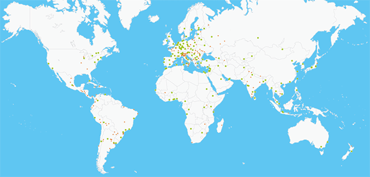

Deutsch lernen mit Musik? Kein Problem! Unsere Spotify-Playlist bringt dir Grammatik auf die Ohren.Neue Lesereihe gestartet: „Stimmen aus Europa“. Jeden Monat stellen wir dir eine Autorin oder einen Autor vor.Heute feiern wir unsere Partnerschaft mit dem Goethe-Zentrum in Accra – für mehr kulturellen Austausch weltweit!Kinoabend im Institut! Diese Woche: "Toni Erdmann" mit anschließendem Filmgespräch. Eintritt frei!Unser neuer Online-Kunstkurs ist live! Lerne Deutsch und entdecke dabei moderne Kunst aus Deutschland.Sprachprüfung bestanden? Herzlichen Glückwunsch! Teile dein Zertifikat mit dem Hashtag #GoetheZertifikat!